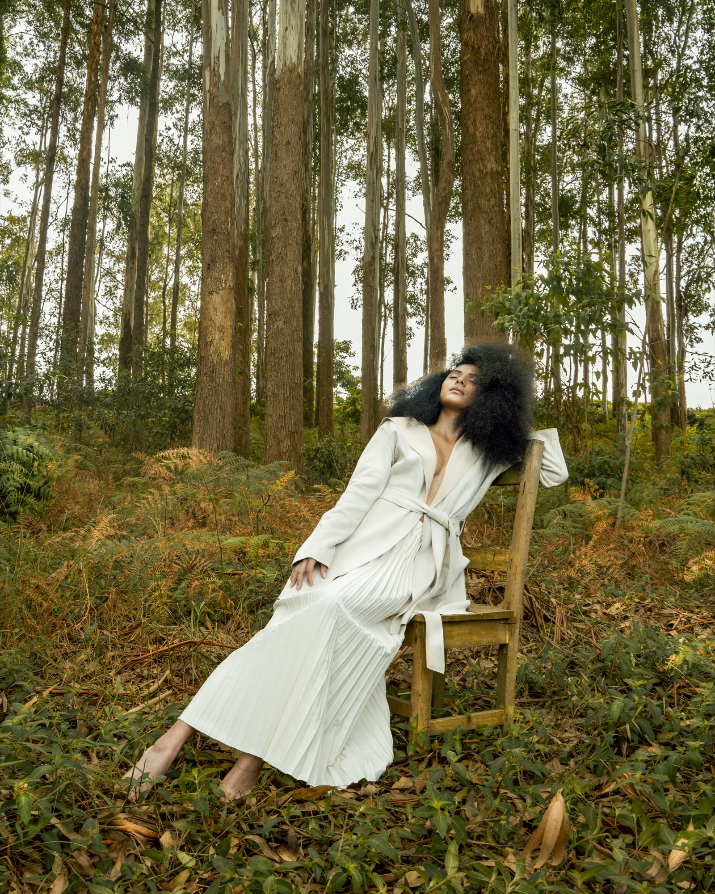
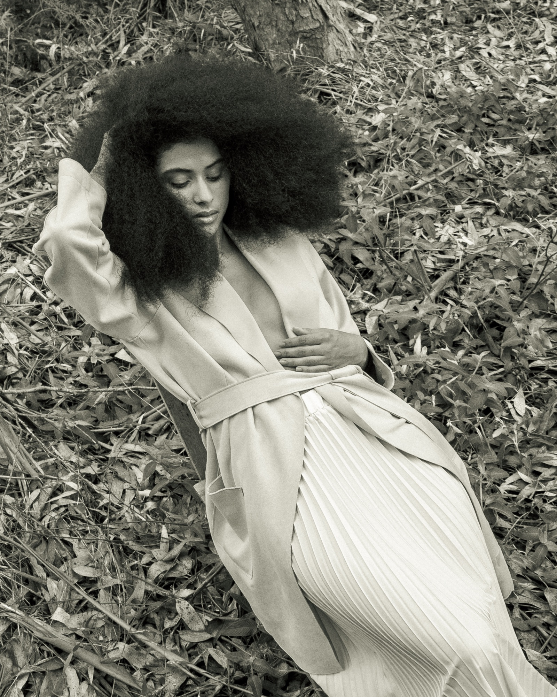
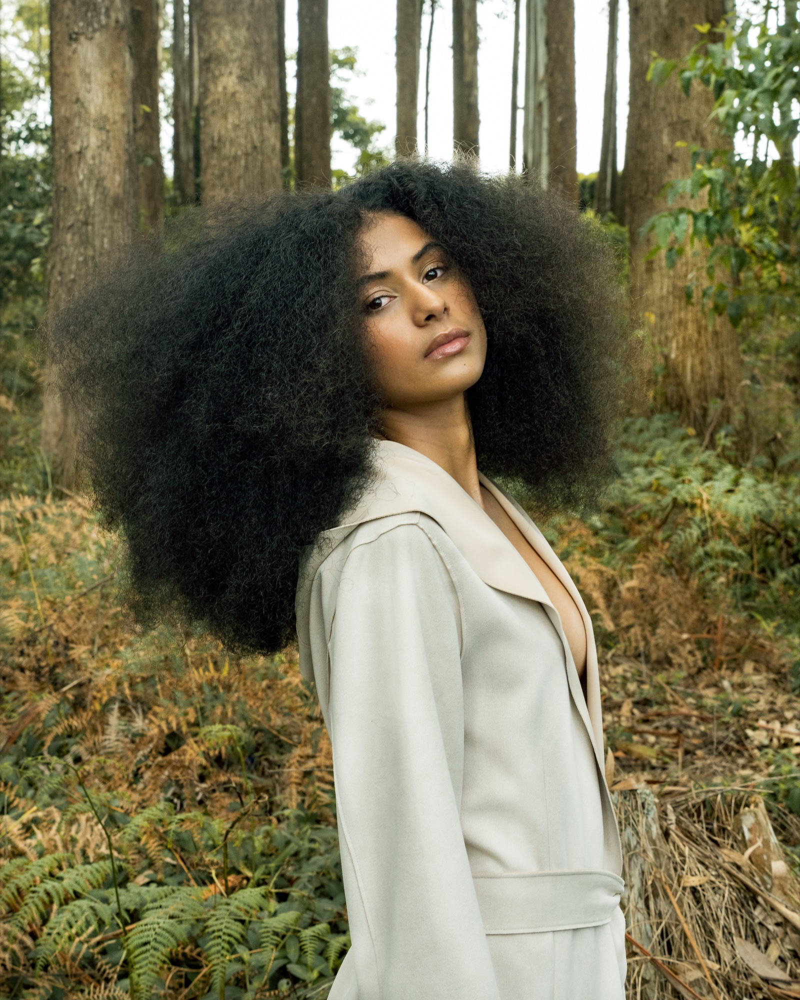
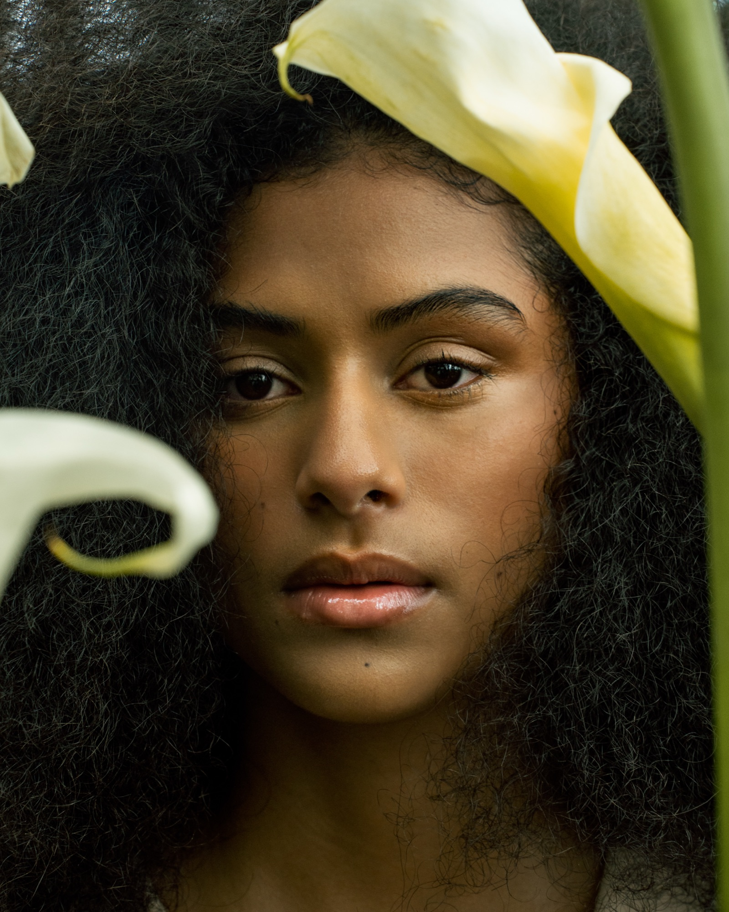
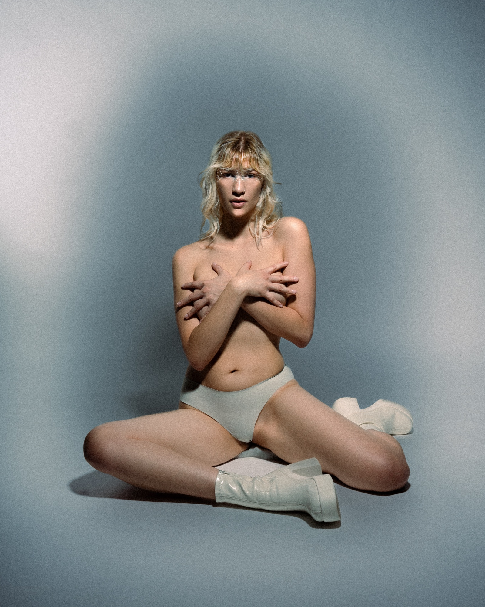
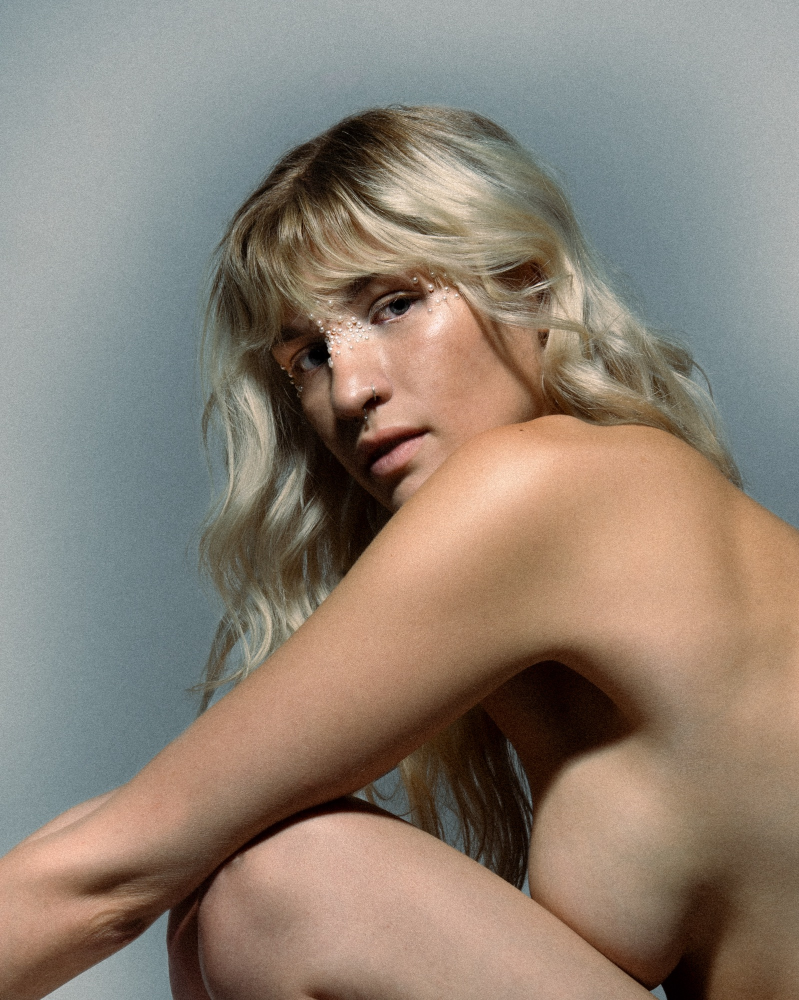
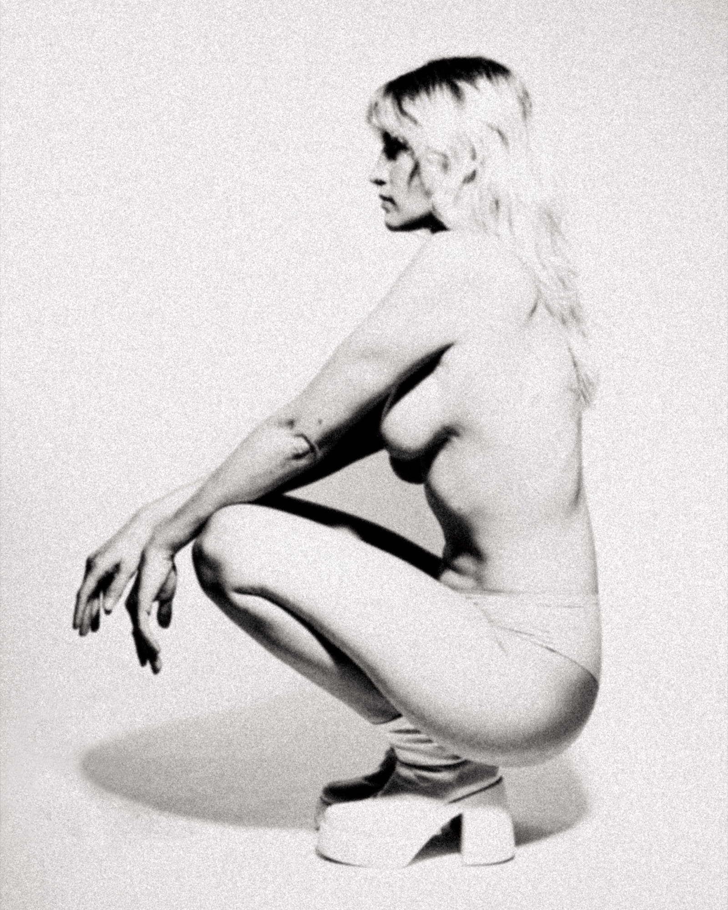

01
Editorial
Every image is a story told against the single version.
Created at different times and in different places, the images in this editorial series share a hidden secret. Hair design, styling, and visual atmosphere come together to form a silent narrative of what remains unseen, inviting the viewer to uncover the subtle connections between each photograph.

Nicoll Gilo





Svea





Teresa

- Discipline
- Photography
Visual Storytelling - Subjects
- Svea Hauer
Teresa Bartels
Nicoll Gilo - Year
- 2024
- Location
- Hildesheim, Germany